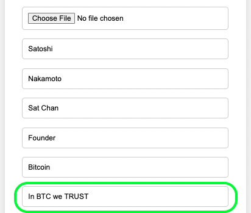

ยินดีต้อนรับสู่คู่มือ CryptoClock
บทนำ
คริปโตคล็อกเป็นนาฬิกาอัจฉริยะที่ออกแบบมาเพื่อช่วยให้ผู้ใช้สามารถติดตามและวิเคราะห์ข้อมูลตลาดคริปโตเคอเรนซีได้อย่างมีประสิทธิภาพ ไม่ว่าจะเป็นการดูราคาทองคำ ราคาน้ำมัน ราคาหุ้น และอัตราแลกเปลี่ยนเงินตราต่างประเทศ นอกจากนี้ยังสามารถปรับแต่งการแสดงผลให้เหมาะสมกับความต้องการของผู้ใช้ได้อย่างยืดหยุ่น
ฟังก์ชันของคริปโตคล็อก
- บอกความเปลี่ยนแปลงราคา:
- หากราคาสินทรัพย์เพิ่มขึ้น แสดงสีเขียว
- หากราคาสินทรัพย์ลดลง แสดงสีแดง
- บอก % ความเปลี่ยนแปลงราคา:
- หากราคาสินทรัพย์เพิ่มขึ้น แสดงสีเขียว
- หากราคาสินทรัพย์ลดลง แสดงสีแดง
- ดูราคาทองคำ:
- อิงตามราคาทองของสมาคมค้าทองคำประเทศไทย
- สามารถดูราคาทองแท่งและทองรูปพรรณได้
- ดูราคาหุ้น:
- รองรับการดูหุ้นทั้งไทยและต่างประเทศ
- หุ้นใน SET และ NASDAQ
- เปลี่ยนสีตัวเลข: ผู้ใช้สามารถปรับสีตัวเลขการแสดงผลได้ตามความต้องการ
- แสดงรูปโปรไฟล์: สามารถเปลี่ยนสีข้อมูลส่วนตัวได้ตามต้องการ
- ดูเหรียญคริปโต: รองรับการดูเหรียญทั้งใน bitkub และ binance
- อัพเดทเหรียญใหม่: สามารถเพิ่มเหรียญคริปโตใหม่ ๆ ได้ หากมีการเปิดตัวเหรียญใหม่ในอนาคต
- ปรับความสว่างหน้าจอ: ผู้ใช้สามารถปรับความสว่างหน้าจอได้ตามต้องการ
- ปรับเวลาอัพเดทราคา: สามารถตั้งค่าเวลาในการอัพเดทราคาให้เหมาะสมกับความต้องการ
- ปรับเวลาพักหน้าจอ: สามารถตั้งค่าเวลาพักหน้าจอเพื่อประหยัดพลังงาน
- ดูราคาน้ำมันปตท.เรียลไทม์:
- ดูราคาน้ำมันปตท.ในวันก่อนหน้า วันนี้ และวันพรุ่งนี้
- ดูราคาน้ำมันบางจากเรียลไทม์:
- ดูราคาน้ำมันบางจากในวันก่อนหน้า วันนี้ และวันพรุ่งนี้
- เปรียบเทียบสกุลเงิน: สามารถเปรียบเทียบอัตราแลกเปลี่ยนระหว่างหลายสกุลเงิน เช่น USD, THB เป็นต้น
- ดูราคาสูงสุดและต่ำสุดใน 24 ชม.: แสดงราคาสูงสุดและต่ำสุดของเหรียญคริปโตภายใน 24 ชั่วโมงที่ผ่านมา
- (รุ่นโปร) ตั้งราคาแจ้งเตือนได้: สามารถตั้งราคาแจ้งเตือน พร้อมลำโพงแจ้งเตือนเหมือนนาฬิกาปลุก
- (รุ่นโปร) สลับดูได้ 5 เหรียญ: สามารถสลับดูเหรียญคริปโตได้ครั้งละ 5 เหรียญ (รุ่นธรรมดาสลับได้ครั้งละ 2 เหรียญ)
- (รุ่นโปร) แจ้งเตือนราคาผ่านไลน์ได้: สามารถแจ้งเตือนราคาผ่านแอปพลิเคชันไลน์
เหตุใดจึงควรลงทุนใน CryptoClock
การลงทุนใน CryptoClock เป็นการตัดสินใจที่ชาญฉลาดสำหรับหลายกลุ่มคน โดยสามารถใช้งานได้หลากหลายวิธี ดังนี้:
- คุณเป็นนักเทรด:
CryptoClock มีประโยชน์สำหรับนักเทรด ดังนี้:
- ติดตามการเปลี่ยนแปลงของราคาคริปโตเคอเรนซีได้แบบเรียลไทม์
- ทำการตัดสินใจซื้อขายได้ทันทีโดยไม่พลาดโอกาสสำคัญ
- รับแจ้งเตือนราคาผ่านแอปพลิเคชันไลน์ในกรณีที่ราคาถึงจุดที่ตั้งไว้
- ดูข้อมูลราคาสูงสุดและต่ำสุดในรอบ 24 ชั่วโมง
- ปรับแต่งการแสดงผลให้เหมาะสมกับความต้องการในการเทรดของคุณ
- คุณเป็นผู้บริหาร Crypto Currency Exchange:
CryptoClock ช่วยให้ผู้บริหารสามารถ:
- ติดตามสถานการณ์ตลาดได้ตลอดเวลา
- ตอบสนองต่อความผันผวนของตลาดได้อย่างรวดเร็ว
- จัดการและวางแผนกลยุทธ์การซื้อขายได้อย่างมีประสิทธิภาพ
- แสดงข้อมูลตลาดที่สำคัญให้กับทีมงาน
- เพิ่มความน่าเชื่อถือและความโปร่งใสในการให้บริการของ Exchange
- ซื้อไปแจก KOL หรือ ผู้จัด เพื่อเพิ่มความน่าสนใจและความน่าเชื่อถือในสายตาลูกค้า
- คุณเป็น KOL (Key Opinion Leader):
CryptoClock มีประโยชน์สำหรับ KOL ดังนี้:
- อัพเดทข้อมูลล่าสุดเกี่ยวกับตลาดคริปโตได้ทันที
- นำเสนอข้อมูลที่ถูกต้องและทันสมัยให้กับผู้ติดตาม
- สร้างเนื้อหาที่มีคุณภาพและเป็นที่น่าสนใจ
- แสดงการวิเคราะห์ตลาดในรูปแบบกราฟิกที่เข้าใจง่าย
- เพิ่มความน่าเชื่อถือและความเชี่ยวชาญในสายตาของผู้ติดตาม
- ซื้อไปแจกลูกเพจ เพื่อเพิ่มความน่าสนใจและสร้างความผูกพันกับผู้ติดตาม
- คุณเป็นนักจัดอีเว้นท์:
CryptoClock มีประโยชน์สำหรับนักจัดอีเว้นท์ ดังนี้:
- สร้างความน่าสนใจและความมืออาชีพให้กับงานของคุณ
- แสดงข้อมูลเรียลไทม์เกี่ยวกับตลาดคริปโต
- เพิ่มมูลค่าและประสบการณ์ให้กับผู้เข้าร่วมงาน
- ดึงดูดผู้เข้าร่วมงานที่สนใจในคริปโตเคอเรนซี
- ปรับแต่งการแสดงผลให้เหมาะสมกับธีมของอีเว้นท์
- ซื้อไปแจกคนมางาน เช่น การจับรางวัลต่างๆ เพื่อเพิ่มความน่าสนใจให้กับอีเว้นท์
- คุณเป็นนักลงทุนระยะยาว:
CryptoClock ช่วยให้คุณสามารถ:
- ติดตามการเคลื่อนไหวของตลาดและการลงทุนของคุณได้อย่างต่อเนื่อง
- ปรับกลยุทธ์การลงทุนตามสถานการณ์ปัจจุบัน
- รับข้อมูลราคาสินทรัพย์ในตลาดต่าง ๆ เช่น ทองคำและน้ำมัน
- ดูข้อมูลราคาสูงสุดและต่ำสุดในรอบ 24 ชั่วโมง
- ตั้งค่าแจ้งเตือนเมื่อราคาสินทรัพย์ถึงจุดที่ตั้งไว้
- คุณเป็นเจ้าของธุรกิจ:
CryptoClock ช่วยให้เจ้าของธุรกิจสามารถ:
- ติดตามอัตราแลกเปลี่ยนเงินตราและราคาสินค้าโภคภัณฑ์ต่าง ๆ
- ปรับกลยุทธ์ทางธุรกิจตามสถานการณ์ตลาด
- วางแผนการจัดซื้อและการขายได้อย่างมีประสิทธิภาพ
- แสดงข้อมูลราคาตลาดให้กับพนักงานและลูกค้า
- เพิ่มความน่าเชื่อถือและความโปร่งใสในการดำเนินธุรกิจ
ไม่ว่าคุณจะอยู่ในกลุ่มใด การมี CryptoClock จะช่วยให้คุณสามารถติดตามและวิเคราะห์ข้อมูลตลาดได้อย่างมีประสิทธิภาพ และเพิ่มความสามารถในการตอบสนองต่อความเปลี่ยนแปลงในตลาดคริปโตเคอเรนซีได้อย่างรวดเร็ว
Hardware Technical
Parameters:
- Use low-power dual-core 32-bit CPU, which can be used as an application processor.
- The main frequency is up to 240MHz, and the computing power is up to 600 DMIPS.
- Built-in 520 KB SRAM.
- Support UART/SPI/I2C/PWM/ADC/DAC and other interfaces.
- Support OV2640 and OV7670 cameras, built-in flash.
- Support picture WiFI upload.
- Support TF card.
- Support multiple sleep modes.
- Embedded Lwip and FreeRTOS.
- Support STA/AP/STA+AP working mode.
- Support Smart Config/AirKiss one-click network configuration.
- Support secondary development.
Specifications:
- Working voltage 4.75-5.25V.
- SPI Flash default 32Mbit.
- RAM internal 520KB.
- Wi-Fi 802.11b/g/n/e/i.
- Bluetooth Bluetooth 4.2BR/EDR and BLE standard.
- Support interface (2Mbps) UART, SPI, I2C, PWM.
- Support TF card, maximum support 4G.
- IO port 9.
- Serial port rate default 115200bps.
- Spectrum range 2400 ~2483.5MHz.
- Antenna form Onboard PCB antenna, gain 2dBi.
- Image output format: JPEG (only OV2640 support), BMP, GRAYSCALE.
- Packaging method DIP-16.
- Transmit power 802.11b: 17±2dBm (@11Mbps), 802.11g: 14±2dBm (@54Mbps), 802.11n: 13±2dBm (@MCS7).
- Receiving sensitivity varies by mode and rate.
- Power consumption details.
- Security WPA/WPA2/WPA2-Enterprise/WPS.
- Working temperature -20 ℃~ 70 ℃.
- Storage environment -40 ℃~ 125 ℃, <90%RH.< /li>
การเริ่มต้นใช้งาน
1. เรียนรู้วิธีเชื่อมต่อ CryptoClock ของคุณกับ Wi-Fi
-
1.1 เมื่อเริ่มเปิดเครื่องมา CryptoClock จะทำการค้นหา WiFi

-
1.2 หากเชื่อมต่อ WiFi สำเร็จจะขึ้น IP และ
เข้าสู่หน้าหลักหรือหน้าล่าสุด

-
1.3 หากคุณเปิดครั้งแรก และ CryptoClock หา WiFi ไม่เจอ
ระบบจะเริ่มการตั้งค่า Wi-Fi ใหม่อัตโนมัติ
- 1.3.1 ใช้สมาร์ทโฟนหรือคอมพิวเตอร์ เชื่อมต่อไวไฟชื่อ "CryptoClock" บางทีอาจจะต้องรอ 1-2 นาที เพื่อต้นหาไวไฟ
-
1.3.2 หลังจากเชื่อมต่อเสร็จแล้ว ใช้สมาร์ทโฟน แสกน QRCode
หรือ ใช้คอมพิวเตอร์เข้าที่ Browser Url : 192.168.4.1

- 1.3.3 กรอก SSID และ Password ลงในช่อง โดยจะต้องเป็น WiFi 2.4GHz เท่านั้น (ยังไม่รองรับแบบ 5GHz)
-
1.3.4 กดปุ่ม Update และรอสักครู่ CryptoClock
จะทำการบันทึกค่าและ Restart

- 1.3.5 เมื่อ Restart แล้วจะสามารถเชื่อมต่อ WiFi ได้ (หากไม่ได้แปลว่าใส่ SSID หรือ Password ผิด ให้ทำขั้นตอนที่ 1.3.1 ใหม่)
การใช้งานพื้นฐาน
2. แนะนำข้อมูลและวิธีการใช้งานหน้าต่างๆ ที่แสดงบน CryptoClock
-
2.1 หน้าแสดงข้อมูลส่วนตัว วันเวลาและวันที่
-
2.1.1 รูปภาพโปรไฟล์ ผู้ใช้สามารถตั้งค่ารูปภาพของตัวเองได้

-
2.1.2 ข้อมูลส่วนตัวของผู้ใช้ประกอบด้วย ชื่อจริง นามสกุลจริง
ชื่อเล่น ตำแหน่ง และบริษัท ที่ผู้ใช้สามารถตั้งค่าเองได้

- 2.1.3 นาฬิกาบอกเวลาและวันที่ แบบอัตโนมัติ ไม่ต้องตั้งค่า และผู้ใช้สามารถเปลี่ยนสีในส่วนนี้ได้
- 2.1.4 เมื่อผู้ใช้กดพื้นที่ใดๆของจอที่ไม่ใช่ส่วนรูปโปรไฟล์ จะเป็นการสลับไปหน้าแสดงเหรียญ Cryptocurrency ได้
-
2.1.1 รูปภาพโปรไฟล์ ผู้ใช้สามารถตั้งค่ารูปภาพของตัวเองได้
-
2.2 หน้าแสดงเหรียญ Cryptocurrency และข้อมูลที่ต้องการ

- 2.2.1 เหรียญที่สนใจ เมื่อกด สามารถสลับไปเป็นอีกเหรียญ โดยในรุ่นทั่วไปจะสลับได้สองเหรียญ
- 2.2.2 สกุลเงินเปรียบเทียบ ในรุ่นทั่วไป ที่ซื้อในประเทศไทยจะมี สองสกุลเงินคือ THB และ USDT เมื่อกดจะสลับได้
-
2.2.3 ราคาเหรียญแบบ Real-Time พร้อมวันที่และเวลา
โดยสามารถปรับระยะเวลา update ได้ในหน้าตั้งค่าภายใน

- 2.2.4 ราคาต่ำสุดและสูงสุดในรอบ 24 ชั่วโมง
-
2.2.5 โลโก้เหรียญที่เราสนใจ
เมื่อกดจะสามารถไปตั้งค่าเหรียญที่เราสนใจได้ผ่านการแสกน
QRCode

-
2.2.6 ปุ่ม Set เมื่อกด จะไปยังหน้าการตั้งค่าภายใน

- 2.2.7 หากสัมผัสที่บริเวณอื่นๆนอกจาก เหรียญ สกุลเงิน โลโก้ และปุ่ม Set เป็นการสลับไปยังหน้าแสดงข้อมูลส่วนตัวและนาฬิกา
-
2.3 หน้าแสดงการตั้งค่าภายใน

-
2.3.1 รายละเอียด Device ID , Firmware version, ip address
ของ CryptoClock เครื่องนี้

-
2.3.2 ค่าต่างๆที่สามารถตั้งได้เช่น ความสว่างหน้าจอ
ระยะเวลาอัพเดทข้อมูล ระยะเวลาพักหน้าจอ และปุ่มตั้งค่าขึ้นลง

-
2.3.3 ปุ่มกลับไปยังหน้า แสดงเหรียญ Cryptocurrency

-
2.3.4 Credit ผู้พัฒนา ผมเอง (ณัฐพงษ์ สุวรรณจิตต์)
ขอบคุณที่สนับสนุนสินค้า

สามารถสนับสนุนผู้พัฒนาได้ด้วย Prompt Pay นี้

-
2.3.1 รายละเอียด Device ID , Firmware version, ip address
ของ CryptoClock เครื่องนี้
การตั้งค่าและการปรับแต่งขั้นสูง
3.เรียนรู้วิธีการอัพเดทความถี่ข้อมูล, ปรับความสว่างของหน้าจอ, และตั้งค่าเวลาหน้าจอหลับ
-
3.1 การปรับตั้งค่า ความสว่างหน้าจอ ระยะเวลาในการอัพเดทราคา และ
ระยะเวลาในการพักหน้าจอ

- 3.1.1 การปรับตั้งค่า ความสว่างหน้าจอ เมื่อกดปุ่มขึ้นลงจะเพิ่มลดทีละ 30% (100->70->40->10)
-
3.1.2 การปรับตั้งค่า ระยะเวลาในการอัพเดทราคา
สามารถตั้งแต่เป็น (10, 30, 60, 120, 300 )

-
3.1.3 การปรับตั้งค่า ระยะเวลาในการพักหน้าจอ
สามารถตั้งแต่เป็น (0, 30, 60, 120, 300 ) หากตั้งเป็น 0
คือไม่มีการพัก หน้าจอจะแสดงตลอด เมื่อแตะหน้าจอ 1 ครั้ง
ความสว่างจะกลับมาปกติตามที่ได้ตั้งไว้

-
3.2 การปรับตั้งค่าข้อมูลส่วนตัวผู้ใช้และการแสดงผล
สามารถทำได้โดยการกด ที่รูปโปรไฟล์ จะแสดง QR Code แล้วนำโทรศัพท์
ที่อยู่ใน Network เดียวกัน มาสแกน


- 3.2.1 การอัพโหลดรูปโปรไฟล์ สามารถอัพโหลดรูปโปรไฟล์ที่มีนามสกุลเป็น .jpg และมีขนาดไม่เกิน 100x100 ได้เท่านั้น โดยจะมีลิ้งให้สามารถเข้าไป convert รูปได้
- 3.2.2 การปรับตั้งค่าข้อมูลส่วนตัวผู้ใช้อื่นๆ เช่น ชื่อจริง นามสกุล ชื่อเล่น ตำแหน่ง บริษัทหรือสังกัด (ภาษาอังกฤษ เท่านั้น)
- 3.2.3 การปรับตั้งค่า Motto หรือคำคม มีกำหนดไม่เกิน 15 ตัวอักษร ใช้เพื่อแสดงตัวตนของเรา (ภาษาอังกฤษ เท่านั้น) 
- 3.2.4 การปรับตั้งค่าสีพื้นหลัง และ สีตัวอักษรส่วนต่างๆ
- 3.2.5 ปุ่มอัพโหลดโปรไฟล์ เมื่อกดแล้ว จะทำการอัพเดทค่าต่างๆไปยัง CryptoClock ของเรา และ CryptoClock จะทำการ Restart โดยอัตโนมัติ
-
3.2.6 ช่องทางจำหน่าย CryptoClock สามารถแสกน QRCode
หรือเปิดผ่านลิ้งค์ได้เลย

-
3.3 การปรับคั้งค่าเหรียญ Cryptocurrency

-
3.3.1 ขั้นที่ 1 ให้คลิกที่โลโก้เหรียญ Cryptocurrency
ตรงกลางด้านบน

- 3.3.2 CryptoClock จะแสดง QRCode ให้นำมือถือมาแสกน หรือเข้า browser พิมพ์ ip address
- 3.3.3 เข้าหน้าเวปแสดงเหรียญ เลือกเหรียญจากในลิสท์ แล้วกดปุ่ม Submit จากนั้น CryptoClock จะทำการ Restart ตัวเองและเปลี่ยนเป็นเหรียญใหม่
-
3.3.1 ขั้นที่ 1 ให้คลิกที่โลโก้เหรียญ Cryptocurrency
ตรงกลางด้านบน
การเชื่อมต่อผ่าน API
4. รายละเอียดเกี่ยวกับการเชื่อมต่อกับ API ของตลาดแลกเปลี่ยนต่างๆ เพื่อดึงข้อมูลสกุลเงินคริปโตเคอเรนซี่แบบเรียลไทม์
- 4.1 ราคาเหรียญอ้างอิงตาม Binance และ BitKUB Exchange เป็นหลัก
- 4.2 หากเป็นเหรียญที่มีทั้งสอง Platform และคู่เทียบคือ USDT จะแสดงราคาของ Binance ก่อน
- 4.3 หากเป็นเหรียญที่มีทั้งสอง Platform และคู่เทียบคือ THB จะแสดงราคาของ BitKUB ก่อน
- 4.4 หากเป็นเหรียญที่ไม่มีใน Binance และคู่เทียบคือ USDT จะหารด้วย rate USDT/THB ของ Binance
- 4.5 หากเป็นเหรียญที่ไม่มีใน BitKUB และคู่เทียบคือ THB จะคูณด้วย rate USDT/THB ของ Binance
การแก้ไขปัญหาและการสนับสนุน
5. คำแนะนำในการแก้ปัญหาที่พบบ่อยและวิธีการขอความช่วยเหลือเพิ่มเติม
-
5.1 หากภาพหน้าจอค้างหรือไม่แสดง ให้กดปุ่ม reset ด้านหลังจอ
(ปุ่มริม)

- 5.2 หากโลโก้เหรียญไม่ตรงกับที่เลือกไว้ให้กดโลโก้เหรียญ เพื่อเปลี่ยนเหรียญอีกครั้ง
- 5.3 หากไม่สามารถแสดงค่าจากเหรียญ Cryptocurrency ได้ให้ตรวจสอบสัญญาณอินเตอร์เน็ต พร้อมทั้งปิดเครื่องและเปิดใหม่
- 5.3 CryptoClock ใช้แหล่งจ่ายไฟ 5V/2A ควรตรวจสอบแหล่งจ่ายไฟให้ดีก่อนใช้งาน
คำถามที่พบบ่อย (FAQ)
6. คำตอบสำหรับคำถามที่พบบ่อยเกี่ยวกับการใช้งาน CryptoClock ของคุณ
-
6.1. ฉันจะเชื่อมต่อ CryptoClock กับ Wi-Fi ได้อย่างไร?
เมื่อเปิดเครื่องมา หากยังไม่เคยเชื่อมต่อ CryptoClock จะทำตัวเป็น Server ให้เราตั้งค่า โดยเชื่อม SSID CryptoClock และแสกน QRCode
-
6.2. ฉันจะตั้งค่าเวลาและวันที่บน CryptoClock
ได้อย่างไร?
สำหรับคนที่ซื้อในประเทศไทยไม่จำเป็นต้องตั้งเวลาและวันที่เพราะจะอัพเดทเวลาสากลมาให้โดยอัตโนมัติ
-
6.3.
ฉันจะเพิ่มหรือลบเหรียญคริปโตเคอเรนซี่ที่ต้องการติดตามได้อย่างไร?
คุณสามารถคลิกที่ไอคอนเหรียญที่อยู่ตรงกลางด้านบนเพื่อเข้าสู่โหมดการตั้งค่าเหรียญและสแกน QR Code เพื่อเลือกเหรียญโดยจะสามารถเลือกได้ 2 เหรียญในรุ่นทั่วไป
-
6.4. จะทำอย่างไรหาก CryptoClock ไม่แสดงค่า
หรือแสดงค่าผิดพลาด?
ตรวจสอบให้แน่ใจว่า CryptoClock ของคุณเชื่อมต่อกับอินเทอร์เน็ต หากยังมีปัญหา ลองกดปุ่ม reset ด้านหลัง (ปุ่มริม) เพื่อรีสตาร์ทเครื่อง
-
6.5. ฉันจะอัพเดทซอฟต์แวร์ของ CryptoClock ได้อย่างไร?
ในปัจจุบันยังไม่สามารถเปิดให้อัพเดทได้แต่คุณสามารถตั้งค่าโปรไฟล์เองได้โดยคลิกค้างที่รูปโปรไฟล์และสแกน QR Code